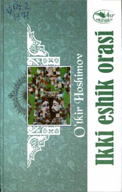

IEQurilish brigadasining boshlig'i va uning jamoasining qiynalgan hayoti.
O'tkir Hoshimovning romani qurilish brigadasining boshlig'i Muzaffar Shomurodov va uning jamoasining hayotini tasvirlaydi. Ikkinchi jahon urushining oqibatlari va sovuq xabar orqali odamlarning qiynalishini, imoni va insonligini saqlab qolish masalasini ko'tarib o'tadi.